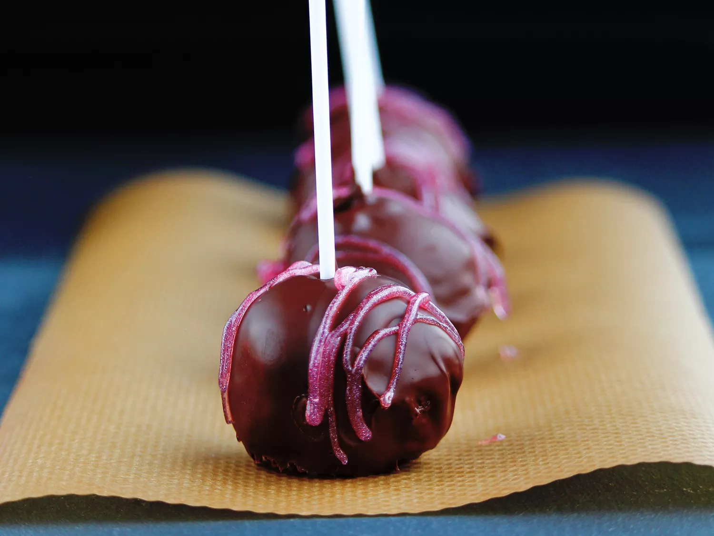

Easy Cake Pops

Tasty, easy-making, and perfect for kids.
Recipe by Queen
Prep Time: 30 mins
Cook Time: 30 mins
Additional Time 1hrs 30 mins
Total Time 2 hrs 30 mins
Ingredients
- 1 (15.25 ounce) package yellow cake mix (such as Betty Crocker)
- 1 cup water
- 3 eggs
- 1/2 cup vegetable oil
- 1 (8 ounce) package cream cheese, softened
- lollipop sticks
- 1 (14 ounce) bag chocolate confectioners' coating
Directions
- Preheat oven to 350 degrees F (175 degrees C). Greese a 9x13-inch baking dish.
- Beat cake mix, water, eggs, and vegetable oil together in a bowl using an electric mixer on low speed for 30 seconds
- Bake in the preheated oven until a toothpick inserted in the center comes out clean, 28 to 33 minutes. Cool cake completely, at least 1 hour.
- Crumble cake into a large bowl and mix in cream cheese. Roll cake mixture into about 40 to 50 quarter-size balls. Insert a lollipop stick into each cake ball and arrange on a baking sheet; refrigerate until chilled, at least 30 minutes.
- Melt chocolate ina microwave-safe glass or ceramic bowl in 15-second intervals, stirring after each melting, 1 to 3 minutes.
- Dip each cake ball into melted chocolate until coated. Arrange cake pops on a baking sheet to dry.
Cook's Notes:
Any flavor cake mix can be used in place of the yellow cake mix.
You can use different food colorings for the chocolate. White chocolate bark can be used in place of the chocolate bark, if desired. Add a drop of red food coloring for a pink coating.
Editor's Note:
The cooking instructions for the cake are based specifically for Betty Crocker(R) cake mix. Follow instructions on box if using a different brand.
Nutrition Facts
Per serving: 114 calories; total fat 8g; saturated fat 3g; cholesterol 16mg; sodium 75mg; total carbohydrate 11g; dietary fiber 0g; total sugars 4g; protein 2g; calcium 22mg; iron 1mg; potassium 65mg